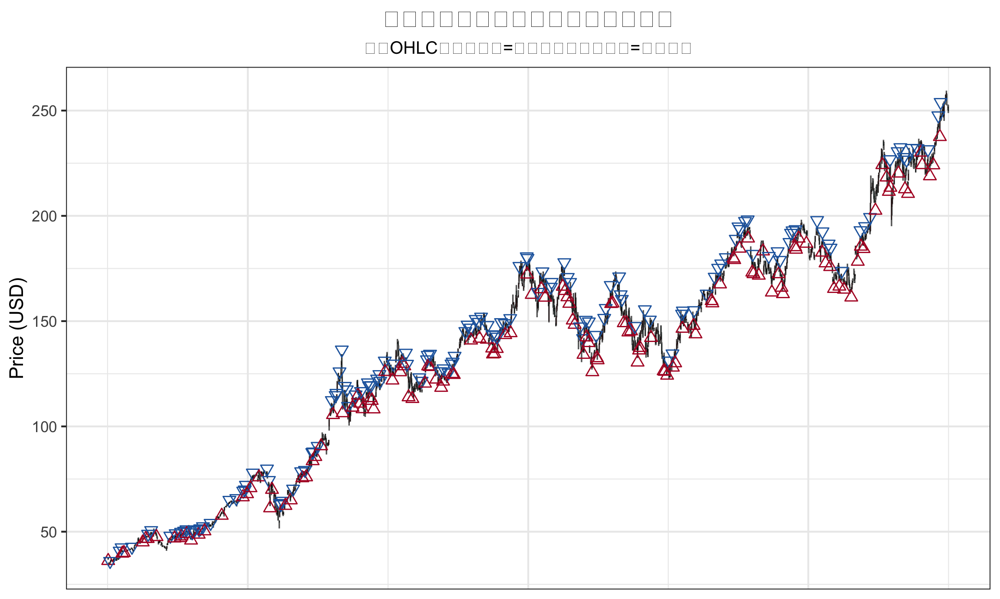

双根K线：吞没、孕线与反击
问题现场
吞没形态常被解释为第二根K线的力量完全覆盖第一根，但“覆盖”究竟指实体还是全区间？是否要求跳空？相等边界算不算？若定义没有写清，两位研究者会在同一幅图上得到不同事件。本章把双根结构拆成包含、重叠、穿透、颜色与收盘关系。
学习目标
- 参数化吞没、孕线、刺透、乌云盖顶与反击线；
- 区分实体包含和全区间包含；
- 用R/Python调用双根形态API并统一方向；
- 处理相等边界、缺口与相邻交易日；
- 检验趋势背景、确认日和实现版本的敏感性。
经典形态与市场机制
吞没强调第二实体覆盖第一实体，孕线强调第二实体被第一实体包含；刺透和乌云盖顶要求第二根收盘进入前一实体一定比例；反击线强调反色K线且收盘接近。它们描述相邻交易日的扩张、收缩和控制权变化，但OHLC仍无法识别订单来源。
双根结构必须使用相邻交易行。若中间停牌或跨市场假日，日历间隔可能不同；拆股日的价格断点若未同步复权，也会产生大量伪吞没、伪孕线和伪缺口。
章内方向索引
| 关系结构 | 看涨候选 | 看跌候选 | 中性/双向含义 |
|---|---|---|---|
| 第二实体覆盖第一实体 | 看涨吞没 | 看跌吞没 | 扩张与控制权变化 |
| 第二实体被第一实体包含 | 看涨孕线 | 看跌孕线 | 收缩，方向依赖趋势 |
| 第二根深入前一实体 | 刺透形态 | 乌云盖顶 | 穿透比例决定定义强度 |
| 反色且收盘接近 | 看涨反击线 | 看跌反击线 | “接近”必须使用预设容差 |
可计算定义
设实体上下界为 \(l_t=\min(O_t,C_t)\)、\(h_t=\max(O_t,C_t)\)。看涨实体吞没可写为：
\[ C_{t-1}<O_{t-1},\quad C_t>O_t,\quad l_t\le l_{t-1},\quad h_t\ge h_{t-1}. \]
孕线把最后两个不等式反向。刺透与乌云盖顶还要预先规定穿透比例，反击线的“收盘接近”则需要ATR或价格比例容差。等号是否包含、最小实体比例和趋势窗口都必须进入假设版本。
研究设计
主实验合并吞没、孕线与反击线，看涨记+1、看跌记-1，同日冲突相加后取符号。成交与成本沿用统一约定，并分别报告全部事件和非重叠事件。稳健性比较实体包含与全区间包含、严格与非严格边界、是否加入过去20日趋势，以及R/Python实现差异。
R实现
ohlc <- lab_xts()
engulfing_r <- eCandleSticks::add_csp_engulfing(ohlc)
harami_r <- eCandleSticks::add_csp_harami(ohlc, n = 20)
counter_r <- eCandleSticks::add_csp_counter_attack(ohlc)
two_signal <- sign(
as.integer(engulfing_r[, "Bull.Engulfing"]) -
as.integer(engulfing_r[, "Bear.Engulfing"]) +
as.integer(harami_r[, "Bull.Harami"]) -
as.integer(harami_r[, "Bear.Harami"]) +
as.integer(counter_r[, "BullCounterAttack"]) -
as.integer(counter_r[, "BearCounterAttack"])
)代码显式列出每个参与组合的方向列。不要根据列名中是否出现Bull或Bear进行模糊选择，因为包升级或中性形态会静默改变研究口径。
Python实现
from ecandlesticks import add_counter_attack, add_engulfing, add_harami
from python.candlestick_lab import load_data, to_ohlcv
ohlcv = to_ohlcv(load_data())
engulfing = add_engulfing(ohlcv)
harami = add_harami(ohlcv)
counter = add_counter_attack(ohlcv)
two_signal = (
engulfing["BullEngulfing"].astype(int)
- engulfing["BearEngulfing"].astype(int)
+ harami["BullHarami"].astype(int)
- harami["BearHarami"].astype(int)
+ counter["BullCounterAttack"].astype(int)
- counter["BearCounterAttack"].astype(int)
).clip(-1, 1)两种语言的一致性表应分别比较原始布尔列；只比较最终组合信号可能让相反方向的差异互相抵消。
图形诊断

应逐例核对两根K线是否为相邻交易行、包含作用于实体还是全区间、缺口是否来自公司行为，以及相等边界在当前实现中是否计入。
证据与稳健性
| sample | events | mean_gross | mean_net | win_rate | ci_low | ci_high |
|---|---|---|---|---|---|---|
| 全部事件 | 743 | -0.0024 | -0.0034 | 0.4657 | -0.0061 | -6e-04 |
| 非重叠事件 | 372 | -0.0026 | -0.0036 | 0.4624 | -0.0074 | 3e-04 |

双根事件通常多于严格多根形态，但样本更多不等于经济效应更大。稳健性一把实体包含改成全区间包含；二分别使用严格与非严格不等号；三剔除调整因子变化日；四把吞没、孕线和反击线分列报告，防止组合掩盖异质性。
AI协作实验室
AI负责把五种双根形态写成真值表并生成边界K线。输入必须明确实体/全区间与等号规则，输出包含每项布尔条件。验收时穷举颜色组合、人工检查边界样本，并与R/Python函数输出对照。
失效条件与常见误区
- 不说明吞没的是实体还是全区间；
- 把相邻自然日与相邻交易日混淆；
- 公司行为造成伪缺口与伪包含；
- 合并后只看净方向，隐藏原始冲突；
- 第二根收盘确认却假设同一收盘成交。
本章小结与练习
双根形态研究的核心是相邻关系的精确定义。包含、穿透与缺口必须明确作用于实体还是全区间；组合信号必须保留原始列与冲突。
- 复现吞没、孕线与反击线的原始方向列。
- 把吞没从实体包含改为全区间包含，比较事件差异。
- 找出R/Python只在一边命中的日期并回到源码解释。
进入下一章前，请确认你能用不等式完整表达双根形态，并说明每个边界选择如何改变事件集合。